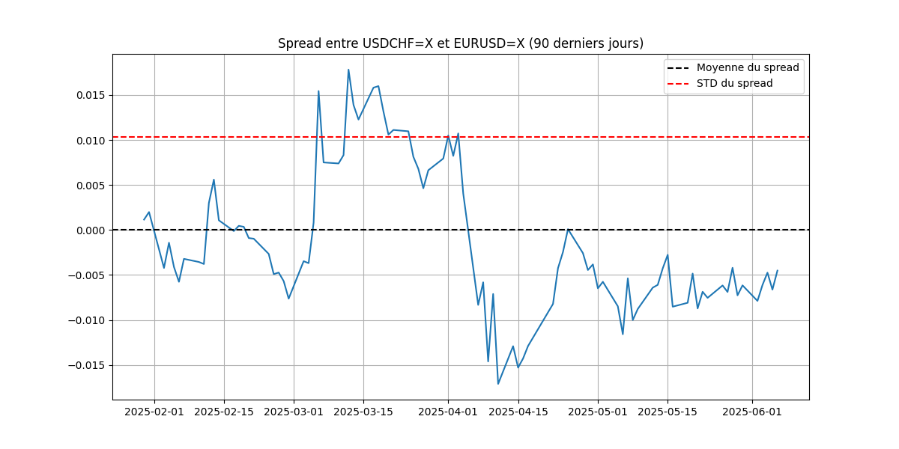

(None, -0.29666358361795003)


Analyse de la paire USDCHF=X / EURUSD=X sur 1y: - Co-intégration détectée : Non (p-value=0.0523) - R² de la régression : 0.8600 - Coefficients : alpha (intercept) = 1.7473, beta = -0.8078 - Niveau actuel du z-score : -0.44 (distance à la moyenne du spread) - Le spread est proche de sa moyenne (pas de signal fort).
SMA Crossing and ADX calculated (details non affichés)
ATR: 0.002696, K: 1.7
Stop Loss Sizing: None
| Vol % | Std % | Risk € | Risk % | |
|---|---|---|---|---|
| 0 | 19.55 | 0.26 | 16.36 | 1.8 |